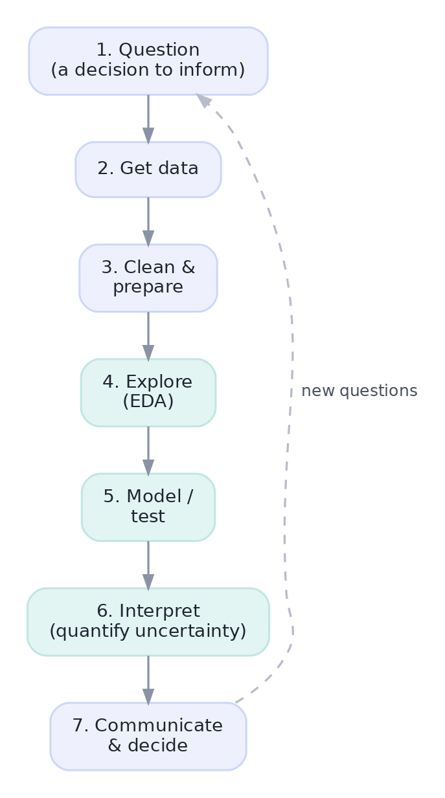

What Data Science Is — and the Path Ahead
The job in one picture, the workflow you'll repeat for life, and why statistics is the engine under all of it.
Every analysis you will ever do exists to help someone make a decision — ship the feature or not, trust the number or not, spend the budget here or there. A data scientist is the person who turns messy, incomplete data into a decision someone can act on with confidence. This first lesson gives you the map: the workflow you'll repeat for the rest of your career, and why statistics is the engine that makes the whole thing trustworthy.
The big pictureWhat a data scientist actually does
Forget the hype for a moment. Stripped down, data science is a simple loop: a question comes from the business, you go get data, you wrestle it into shape, you look at it, you test an idea, you figure out how sure you can be, and you tell someone what to do. Then a new question appears and the loop turns again.
Here is the whole job in one picture. Memorize this shape — every project you ever touch is a trip around it.

A few of those words deserve a quick definition now; we'll go deep on each later:
- EDA (exploratory data analysis): looking at data with summaries and charts to learn its shape, spot problems, and form hypotheses — before any modeling.
- Model: a simplified description of how the data behaves, used to predict or to explain (a trend line, a classifier, a forecast).
- Inference: reasoning from a limited sample of data back to the larger world, while honestly stating how uncertain that reasoning is.
Notice that building a model is one small box in step 5. Beginners think data science is mostly modeling. In reality the green steps — exploring, testing, and quantifying uncertainty — are where good judgment separates a real data scientist from someone who can call .fit(). That judgment is statistics. So that is where we start.
MotivationWhy statistics is the engine
Let's make the need for statistics concrete. Suppose your team changed the checkout button and ran the old version (A) against the new one (B). Here is the kind of tiny analysis you'll write on day one — load the data, aggregate it, and compute the result.
import pandas as pd
# QUESTION: does the redesigned checkout button lift the purchase rate?
# DATA: three days of visitors and purchases for each button variant.
visits = pd.DataFrame({
"variant": ["A", "A", "A", "B", "B", "B"],
"visitors": [4012, 4015, 4030, 3998, 4007, 4001],
"purchases": [286, 291, 302, 327, 318, 333],
})
# CLEAN/AGGREGATE: total visitors & purchases per variant, then the rate.
summary = visits.groupby("variant")[["visitors", "purchases"]].sum()
summary["purchase_rate"] = summary["purchases"] / summary["visitors"]
print(summary)
a, b = summary.loc["A", "purchase_rate"], summary.loc["B", "purchase_rate"]
print(f"\nA = {a:.3%} B = {b:.3%} relative lift = {b/a - 1:.1%}")
print("But is that lift REAL, or could random luck produce it? -> statistics.")visitors purchases purchase_rate variant A 12057 879 0.072904 B 12006 978 0.081459 A = 7.290% B = 8.146% relative lift = 11.7% But is that lift REAL, or could random luck produce it? -> statistics.
Button B converted at 8.1% versus 7.3% for A — an 11.7% relative lift. Ship it, right?
Not so fast. Those numbers came from a sample of a few thousand visitors on a few days. If you had watched a different week, you'd have gotten slightly different numbers. So the real question isn't "is B bigger here?" — it obviously is. The question is: "is B genuinely better, or did random luck hand us this gap?" That single question — telling signal from noise — is what statistics answers, and it is the most valuable skill you will build in this entire course.
The most expensive mistake in data work is treating a number from a sample as if it were the exact truth about the world. A conversion rate, an average, a correlation — each one wobbles depending on which data happened to land in your sample. Statistics is the discipline of saying how much it wobbles, so you don't bet the company on noise.
Your pathHow this course is built
The eleven tracks aren't a random pile of topics — they're stacked so each one rests on the one before it. Roughly, they map onto the workflow you just saw:
- Get & clean data → Track 1 (Python, NumPy & Pandas).
- Explore → Track 5 (EDA & Visualization), powered by Track 4 (Statistics).
- Model / test → Tracks 8–8 (Machine Learning, A/B Testing, Feature Engineering, Evaluation, Causal Inference).
- Interpret & decide → Track 12 (Communication), then Tracks 14–11 (Interview prep and Capstones) prove you can do the whole loop yourself.
We begin with Statistics & Probability because it is the language every later track speaks. Build it solid here and everything above it gets easier.
★ Key points to remember
- A data scientist exists to turn data into a decision — not to build models for their own sake.
- The workflow — question → get data → clean → explore → model/test → interpret → communicate — repeats on every project.
- Any number computed from data is a sample, and samples wobble. The core job of statistics is separating real signal from random noise.
- We start with statistics because it is the foundation the other ten tracks are built on.
◆ Practice▸
Show solution & reasoning
The first question is about this specific sample and can be answered by simple arithmetic — just compare the two computed rates. The second question is about the real world (all visitors, including ones you didn't observe). Because your data is only a sample, the observed gap could be a real effect or could be random luck. Statistics is what lets you reason from the sample you have back to the world you care about, while stating how confident you can be. Only the second question makes that leap, so only it needs statistics.
Show solution & reasoning
(b) is the Question step — every project starts here. (d) is Clean & prepare. (a) is Explore (EDA) — a chart to understand the data's shape. (c) is Communicate & decide — translating analysis into a recommendation. Notice none of these is 'build a machine-learning model' — most real data-science work lives in the other steps.
◎ Deep dive: statistics vs. analysis vs. ML vs. data science▸
People use these four words loosely, and interviewers love to check whether you can keep them straight:
- Statistics is the mathematical theory of learning from data under uncertainty — estimation, testing, and quantifying error. It is the foundation.
- Data analysis is the practical activity of exploring and summarizing data to answer a question, often without heavy modeling.
- Machine learning is a set of methods for building models that predict, by learning patterns from data automatically. It leans heavily on statistics.
- Data science is the whole job — combining all of the above with engineering, domain knowledge, and communication to drive decisions.
A useful way to see it: statistics asks "what can I conclude, and how sure am I?"; machine learning asks "what's the most accurate prediction I can make?" The best data scientists fluently switch between the two mindsets depending on whether the goal is understanding or prediction — a theme we'll return to in Tracks 8 and 8.
A common warm-up question is "walk me through how you'd approach a data problem." Answer with the workflow from this lesson — question, data, clean, explore, model/test, interpret, communicate — and emphasize that you'd quantify uncertainty before recommending a decision. It signals maturity far better than jumping straight to "I'd train a model."